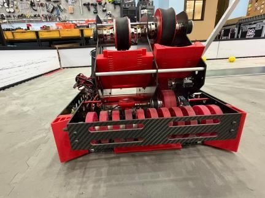
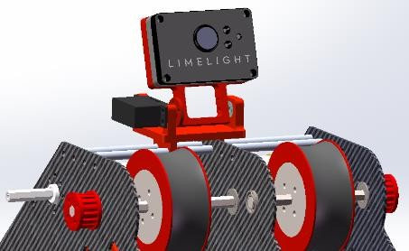

01 Intake
Two openings
Small balls in front, big balls at the back. They never compete for the same entrance.
447 × 392 × 357 mm, 11 kg, 3.3 m/s on the field. Seven balls per load, twelve in autonomous.

Small balls in front, big balls at the back. They never compete for the same entrance.
Delivers a ball to the launcher in under 0.1 s.
Reads AprilTags; the chassis turns itself.
Fire separately, or both at once.
| Item | Value |
|---|---|
| Dimensions | 447 × 392 × 357 mm (L × W × H) |
| Mass | 11 kg with battery |
| Top speed | 3.3 m/s measured on the field |
| Chassis | Five lightened carbon fibre side plates, low centre of gravity |
| Drive | 4 × goBILDA 435 rpm through a custom 4:3 belt |
| Wheels | Four 4-inch mecanum wheels (Ø101 mm), 10 mm ground clearance |
| Localisation | One PinPoint plus two dead wheels, running RoadRunner |
| Capacity | Four small and three big balls, seven in total |
| Launcher | Twin flywheels Ø72 mm / 448 g, about 4 m/s exit speed at 72° |
| Autonomous | Three cycles, twelve balls, target success rate above 90% |
Four mecanum wheels give us omnidirectional movement. Heading comes from one PinPoint gyro, X and Y from two dead wheels. RoadRunner takes the three vectors and drives the shortest path in autonomous.

We cast our own 30-degree silicone intake wheels, so friction and pressure are both tunable. The front is flared so the ball is caught whatever angle it arrives from.
A REV 3:1 gearbox at 2000 rpm drives three stages of intake and transfer; intake and transfer share one drivetrain.
Dropping the sorter cost us a second intake and a second flywheel. Neither channel waits for the other.


We print the flywheels ourselves: 72 mm, 448 g, with six laser-cut stainless plates inside. They run at 6000 rpm on a 1:1 belt. A groove keeps the ball centred and a 30-degree silicone ring adds grip.

RoadRunner for the path, Limelight3A for the aim, PIDF to hold flywheel speed. Three jobs, kept separate.
AprilTag bearing, with heading from the PinPoint.
Three vectors into a pose, shortest path out.
Hive state polled every 20 ms, done inside 25 s.
Chassis, intake and twin flywheels on separate loops.
The hive is polled every 20 ms, with fallback checks at 20 s and 25 s.
| Flywheel | P | I | D | F |
|---|---|---|---|---|
| Small | 80 | 0 | 20 | 13.5 |
| Large | 200 | 0 | 20 | 13 |
We use the PIDF built into DcMotorEx, with separate gains per flywheel. When the battery sags, the shot does not drop with it.
The first two only changed after they were built. The third is the one we compete with.
A 3D-printed turret bearing meant to sort, aim and fire on its own. No room for it in the frame. Abandoned.
 Abandoned
Abandoned
Two channels that worked as channels, but underspin balls bounced back out of the goal. Abandoned.
 Abandoned
Abandoned
Both channels switched to topspin, which largely fixed the bounce. Final build.
In use
24 teams, six matches each, 36 in total. First match at 10:00, one every eight minutes.
| Match | Time | Field | Position |
|---|---|---|---|
| No.2 | 10:08 | Field 2 | Red 1 |
| No.11 | 11:20 | Field 1 | Blue 2 |
| No.17 | 12:08 | Field 1 | Blue 1 |
| No.20 | 13:30 | Field 2 | Red 2 |
| No.26 | 14:12 | Field 2 | Blue 1 |
| No.36 | 15:22 | Field 2 | Blue 2 |
A few entries from the engineering notebook, newest first.
Drive practice: starting and switching OpModes, using the driver station. Four of us ran two full rounds in two pairs; judging distance badly and poor hand-off between the two drivers showed up immediately.
Demo of the autonomous options: too little power and the ball falls short, too much and it spins out; sometimes the ball is intaken but never reaches the launcher. Teleop controls explained — left stick translates, right stick rotates, X stops the flywheel, the top buttons select four power levels, B-up intakes.
Swapped every acrylic plate for carbon fibre to get the stiffness up. Discussed colour strategy for autonomous, which we could not detect automatically yet. Split the notebook: software to Wu Siye and Zhang Gaoqi, structure to Shi Xizhi and Yang Chaofan.
Learned the drill and tapping: oil the tap, keep it square, clear the swarf. Got the outline of the Java codebase. Argued about how to mount a plate to the tube for the lift, and settled on a glued hollow cylinder with a screw driven down the middle to expand it.
Coach Wu demonstrated the current robot and walked through the weak points: shot accuracy and arc at the far zone, collector speed, no way to reorder balls, battery capacity and chassis vibration. New members drove the chassis for the first time.
We tried to derive the relationship between flywheel speed and where the ball lands. Assuming constant friction, the model disagreed with the measurements. The flywheel deforms at speed, so the friction is not constant at all. We never got the formula, but we did run the full loop: measure, model, compare.